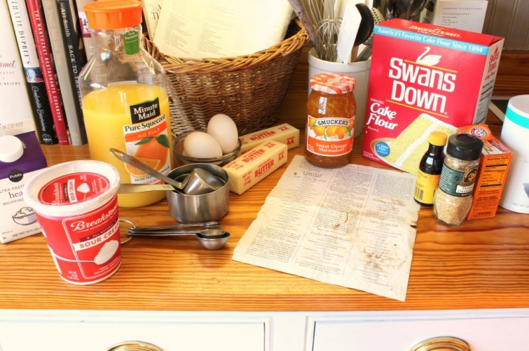
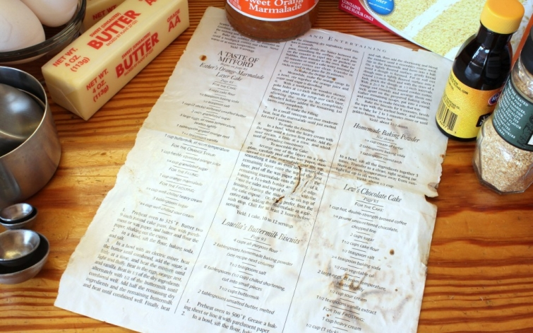

.png)
.PNG)
.PNG)
.PNG)
.PNG)
.PNG)
.JPG)
.JPG)
.PNG)
.PNG)


You knew I would make one, didn’t you? My father-in-law’s birthday was a week ago, and this is the cake I make for him. My mother-in-law makes delicious cakes. She had already made a caramel cake and a lemon cheese cake for his party, but she doesn’t make the orange marmalade one (and don’t ask me why they call that lemon cake “cheese.” I have no idea.) Having a made-from-scratch birthday cake is wonderful. Having an assortment of all your favorite made-from-scratch cakes for your birthday: priceless. 🙂
In case you are not familiar with the Mitford novels, let me just say that the orange marmalade cake could almost be considered a character. It appears in most of the books, is quite famous in the fictional village of Mitford, and could be the cause of a major diabetic coma for Father Tim. Jan Karon was frequently asked for the cake recipe early in her writing career. At that time, there was no recipe. It wasn’t until Victoria magazine and Southern chef Scott Peacock teamed up that the recipe was born.

My father-in-law likes the layers of the orange marmalade cake. They seem to “brown” a little more than others (or perhaps I cook it longer than others, who knows?) There is a recipe for it in The Mitford Cookbook and Kitchen Reader (included in the giveaway here,) but for some reason it is different from the one originally published in Victoria magazine years ago. So I tweak my old beat up magazine copy. (Obviously I sat a hot pan on it at one time…it really is in bad shape.)

This cake is not difficult, but it has a lot of steps, so it takes a while to make. Here is the original recipe for the cake part first.
I follow it exactly, except I bake it in three 9-inch pans instead of the recommended two. I like frosting…a lot. I do it in three so that I can get more frosting per bite. 🙂 (Note: I made a gluten free version here. Just substitute gluten free flour for the flour in the recipe, make sure all your other ingredients are gluten free (they probably are), and add in 1 extra egg.)

And by the way, I am a terribly messy cook. I had added flour at one point in making this, turned on the mixer, and woosh! The flour exploded out of the mixer all over the counter, cookbooks, nearby jars, and floor. nice…big…mess. 🙁

Anyway, because there are three layers instead of two, I bake it 40 minutes instead of 45. This does allow it to brown more, but poking all those holes in it, and spooning orange juice in all the holes keeps it moist.
Here is the rest of the recipe.
This is where most of my changes get made. Two cups of marmalade are used instead of one since it is being spread on an additional cake layer.
I also use 2 cups of whipping cream, a tablespoon of vanilla, and 1/4 cup of sugar in the frosting – but I keep the sour cream at 3/4 cup. I just like it a little sweeter than the original frosting recipe makes. You could keep the original ratio if you like.
An entire layer of frosting and an entire layer of marmalade is spread between each layer. The recipe calls for only the marmalade. (I forgot to photograph it after the frosting on the first layer..sorry. But I did remember after layer number 2!)
So here she is all finished. I have already told you I am messy, so there are crumbs around the base, and the icing is quite rustic looking – definitely not smooth like a professional baker would do. But ….

it is quite delicious – especially with a cup of coffee or hot tea.
As I mentioned earlier, the other version of the orange marmalade cake is in the Mitford cookbook that is included in the giveaway (details here.)
Just leave a comment on any or all of the Loving Mitford posts, and you will be entered in the drawing. Both of the books are great, but the cookbook is really a good cookbook – plus it has excerpts from the novels that go with the food in the recipe. That makes for a delightful read!
I told you the orange marmalade is one of my father-in-law’s favorite cakes. (It was his first choice at his birthday party! 🙂 ) As good as it is, it is not my favorite, but picking one favorite is hard. My favorites are seasonal….fresh apple cake in the fall, warm gingerbread or red velvet at Christmas, that lemon cheese cake in the spring, a pound cake with fresh peaches in the summer, and my mom’s tiramisu cake for my birthday. So today my wondering brain wants to know….
Do you have one favorite cake? (to eat or bake) If so, what is your favorite?
Can’t wait to hear from you!
p.s. All your yummy favorite dishes in your comments of my last post made me hungry and made my mouth water! I think some kind of chicken dish was the overall favorite to serve when entertaining. My favorite is a pork tenderloin served with grits, turnip greens, and little biscuits. Yum!
***Giveaway has closed. Winner was announced 2/7/13.***


.PNG)
I have never read the stories. I had never heard of it until I saw this event. I am not a big reader, but confess that your blog has left me with a curiosity that may have to satisfied. Since the library is hosting this event, I can’t help but assume that they have at least some of the books in this series. I may read one and then have an excuse to take the trip!
——————————————————————
YES your library will have all the books. Go start with At Home in Mitford. You will be hooked!
Enjoy!
Kelly
I found this site while trying to find out about Mitford. Our local library is having a “Taste of Mitford” to honor those who contribute. I clicked your link and read about your visit. Lovely visions! It makes me want to experience the town. Thank you for the wonderful read.
PS>> Nothing wrong with going overboard on things!
——————————————————————-
What a fun event at your library Anna Mae! If you are a Mitford fan, you would love a trip to Blowing Rock. 🙂 I’m so glad you found your way to the post. I hope you will visit again. 🙂
Thank you for your comment.
Kelly
Kelly I don’t even know if you are still out there, but I want to make this cake. And is it possible to make the cake only one day before, cover it and then frost it the next day? Thank You
Loved the Mitford series……
——————————————————————–
Most definitely! It like it cold the best.:)
Kelly
i was afraid the mitford books would be too schmolsie but they stop just short of it. i’m really enjoying them. i’m hooked.
——————————————————————-
They will hook you…and make you want Jan Karon to hurry up and right another one. Glad you are enjoying them!
Kelly
I would love to know how to make my grandmother’s Burnt Sugar Cake. So good! This looks wonderful too, so moist and flavorful. I will have to make.
I really appreciate this recipe! I received rave reviews about it at church and in my various college organizations.
Just seeing everything on Mitford makes me homesick for everyone in the in the little town that I could step right in and visit with everyone at the sweet stuff bakery or a cup of coffee at the cafe
Looking forward to making this cake and enjoying it with a cup of coffee and the new book can’t wait to go home for a visit to Mitford
—————————————————————
The books do make you feel you could visit in the bakery or at the Grill, don’t they? The orange marmalade cake is time consuming but oh so delicious! Hope you do get to make it Tia.
Kelly
I used to collect cookbooks and sold hundreds at a garage sale saving only a select few. The Mitford Cookbook is on my bed stand for frequent skimming over and over. I’m anxiously awaiting the next novel to arrive in bookstores!
————————————————————
It is such a good one, isn’t it Nancy? And like you, I can’t wait until we have the next Mitford book! Perhaps it will have enough new foods mentioned in it to prompt another Mitford cookbook!:)
Kelly
I have made the Orange Marmalade Cake several times. In fact, our son reminded me this past weekend that it’s time for another one! Jan Karon’s Mitford Cookbook has a permanent spot on the island in our kitchen. I think my favorite cake that I make is a Carrot Cake. It is by far the best recipe I have ever come across for a carrot cake. Like the orange marmalade, it has quite a number of steps … but it is sooooo worth it! It gives you all the calories and fat grams you need for a month!!
————————————————————
Susan, your son sounds like my father in law. He is the one who requests the orange marmalade around here. A carrot cake is always the request of my mom. (And I am happy to eat either one of them. 🙂 )
Kelly
I want to copy the recipe. However I am a novice at this “copying” thing on the computer. Would you or someone please email me a copy of JUST THE Recipe. I would so appreciate it. I did find a recipe that I tried once,and it wasn’t very good This one I MUST have.
Thank you.
————————————————————–
Sandra I am sending you the recipe as an attachment. I hope it comes through. It was saved as an image in the post to make it easier to just right click on it, hit copy (to a document you have open) and then print. You will need to click on the attachments to get the recipe.
Let me know if it works please!
Kelly
I loved the Mitford series books! I was curious as to whether or not I could find a recipe for the Orange Marmalade cake and here it is. I plan to try making it.
Our family’s favorite birthday cake is the Miami Beach Birthday Cake which was a Pillsbury Bake-off winner years ago..
I am not at all surprised to see that you have made Esther’s cake! I have made it a few times, but modified the recipe (I’m embarassed to say) and used (ugh) a box cake mix. Scratch is surely much better! My husband’s favorite from-scratch cake was a Lane Cake. It has fruit and bourbon, I think. Unfortunately, the recipe book was lost in our last move!
Anxious to hear who the winner is!
I have read some of the books but never knew about a cookbook! Thanks!
Love the Milford series. My favorite cake would be a pound cake started in a cold oven. Moist,and so, so good. It has vanilla, lemon,and almond flavoring in it. My aunt used to make them and save my Daddy the ‘sad’ ones.
My favorite is either Better than *** cake or a good old fashion Applesauce cake.
I’ve added this collection of books to my library list. I’m excited to read them all!
My favorite cake is homemade pound cake. Our next door neighbor when I was growing up made the best sour cream pound cake. She was known all over town for her cake , much like Esther in Mitford. When I was grown and had moved away from home if she knew that I was coming home to visit she would always bake me a cake. When I got home she would call me and say come meet me at the fence, and she would hand over her beautiful cake. She got as much joy from giving that cake as all the people did who received them over the years. After she died I received one of her cake plates as a gift from her family. Every time I use it I rememebr my wonderful neighbor and friend.
Red Velvet cake is my favorite but I
also love Mississippi Mud cake.
I actually just had my birthday on Saturday and for that I chose Banana Cake with Buttercream icing with chopped walnuts pushed in around the edges. It was oh so good! My second favorite is German Chocolate. It is also my son’s favorite and his b-day is on the 12th so I left that one for him.
Kelly,
I have wanted this recipe for ages. I accidentally got rid of the issue of Victoria that the recipe appeared in. Thanks! I’d prefer 3 layers too.
Karen
Sounds YUMMY!
I used to be a big fan of the MItford series, have dropped off a bit. But it makes me wonder if you read Dorothy Sayers/Peter Wimsey? I have a cookbook for many of the food dishes that were part of Peter and Harriet’s life, and others. Have made the kippers with parsley for breakfast and eggs with jam–yes, eggs, as they are just a different way of using a crepe batter.
Best to you–
Oh. My. Goodness. I have been sure to stay away from the cookbook so that I wouldn’t be tempted by this cake. This looks even better than I imagined!!!! Now, to try to put these pictures out of my head. LOL!!! Great post!
Looks like a lot of work to me but so yummy!
This orange marmalade cake looks yummy. I can’t wait to try it. My favorite cake is red velvet. It bring back wonderful memories of my sweet mom who made sure I had one for my birthday every year. Even after I was grown and married. Love her so and miss her terribly!
Thank you for the wonderful give away opportunity. I have so enjoyed the Mitford blogs.
My all-time favorite cake is (from scratch) German Chocolate Cake. My best friend always makes me one for my bday. I could eat the icing w/o the cake! lol
My favorite cake is Rosewood cake! My grandma from Virginia used to make it for all our holidays so I think about her whenever I think about it or eat it! The frosting for this cake is so sweet that your teeth hurt just eating it!
This may be the cake I make for my book club Tuesday! Thank you for the recipe!
I think I may have mentioned on your last post that I’ve made this cake….and it was a lot of steps!! I had to try it, but because my husband is diabetic, I saved myself a piece and gave the rest to my daughters family, I didn’t want him eating it and going into a coma!
My favorite cake is probably Hummingbird cake or Mexican Wedding cake. However…I wouldn’t turn any down!
Kelly, that cake looks soooo yummy. I love orange marmalade. My favorite cake would have to be my mom’s apple cake. It was her mom’s recipe. It has a simply glaze and is served warm. It’s our favorite. We always told her she could sell it; it’s that good! patty Haven’t read the Mitford series. I’ll have to look for them at my local library. thanks! Patty
mmmmmmm, I love cake! Period. Can’t be much inspiration on that point. And Kelly, I am L O V I N G this first book!!
I love this cake! You are so right — this cake is almost a character in the book. It always tickled me that Ms. Karon made it up out of whole cloth, with no recipe in the back of her mind, and she had to scramble to come up with one when her readers demanded it. I love making and eating my mother’s Filled Swedish Sponge Cake. It’s one of those recipes that takes several days and I have such fond memories of the occasions when my mom and I worked together to prepare one. My mom has been gone for 10 years, but your post has afforded me the opportunity to relive many happy times with her, making this sponge cake. The recipe is on my website, http://www.barbarahinske.com. Enjoy!
Since I’m on a diet, I would love any kind of cake now 🙂 but chocolate is my favorite.
I would have to say that I prefer pie over cake but that being said I do like cake and could always go for a piece of chocolate, carrot or white cake with coconut icing. : ) I have never made this recipe yet but it is on my list of things to do. Sadly I never got to read the articles in Victoria magazine and missed this version of the recipe. Thanks for posting it.
That looks yummy Kelly!! And my husband from Savannah loves Lemon Cheese cake too. I was very disappointed when I found out it was a cake with lemon curd icing. To each his own I guess!!
You’ve got me hooked, just reading your blog makes me want to read the Mitford series. I have already ordered the first two books on Amazon.I LOVE reading your blog!! Please continue the great posts.
Kelly, I always look forward to enjoying a piece of your Orange Marmalade Cake~ it is absolutely delicious!! I need to make one. Well, maybe not~I will just eat too much of it!
My all time very favorite cake is German Chocolate! I just can’t stop eating it if I there is one around. Of course, Nanny’s is the best!
Kelly,
My favorite cakes are my Mother-in-laws Texas Sheet Cake in the summer, her apple cake in the fall, her carrot cake in the spring and her banana cake in the winter! Funny how she makes them seaonally also. I love them all and she always serves them cold from the fridge with vanilla ice cream on the side.
This orange cake is going to get made for my Mom though. She loves all things orange. She will love this cake made special for her and I might do it as a Valentine’s day treat for her and Dad to share. Thanks for sharing the recipe with us!
I would love to see what other recipes are in that lovely cookbook also!
This cake looks wonderful, I plan to make it this week!
I like cake!!! Not easy to name a favorite…but I will say Tres Leche Cake is particularly delicious. I will give this Orange Marmalade Cake a go to get that taste of Mitford. Thank you for sharing the recipe.
Wow! A cake that could almost be a book character would have to be wonderful. My favorite cake is almond cheesecake. I used to make it or Swiss Chocolate Cake for each family member’s birthday until I learned to make fondant cakes. Now we are “into” the look of the cake as well as the taste.
Kelly,
Having just moved to SC from CA I love everything citrussy. Especially oranges (lemons a close second). Just have to give this cake a try. Have not started to entertain and it’s a bit much just for the two of us but it is definitely one recipe I will try. Thanks for sharing. And you also wet my appetite to sink my teeth into the Mitford books. Have not read any yet. Which one do you recommend as the first one?
Have a great Sunday.
Wow…I need to make a cake next week for a surprise 50th birthday party…this looks really yummy…maybe I’ll give it a try! Thanks!
I don’t know if I have a favorite cake. I love them all! Your Orange Marmalade cake looks delicious. I loved the Mitford series and haven’t read them in years. Maybe I’ll start reading them again. I bought the whole series for my Aunt when she had a long stay in the hospital and she too loved them. Thanks for great posts about the Mitford years.
My favorite cake was my mother’s Red Velvet Cake. Some red velvets are anemic not hers. She is no longer with us and I have her recipe, but it never taste like hers. Isn’t that always the way. My favorite cake to make is a Pig Pickin Cake.
Yum! Your cake looks beautiful.
So making that cake! My daughter’s birthday is coming up and I know she would love this. I like the three layers and will most likely do that. Yum. My favorite cake would probably be my mom’s old recipe for Rum Bundt cake.
This looks so yummy & beautiful…thanks for sharing….I will definitely have to give it a try! My grandmother would have loved it…she was definitely a marmalade conniseaur. Stonewall Kitchen makes a tangerine marmalade that is so good
Kelly
I love red velvet cake. I try to make one once a year. They are my absolute favorite. Next would be a caramel cake. Yum!
Oops….Carmel Cake from Carolina Cakes
Coconut cake from The Penisula Grill (Charleston) or Seven Layer Carmet Cake Crome Carolina Cakes. Both can be shipped.
I have tried many of your recipes and shared with my family and friends. Love your blog!! Happened upon it by chance and look forward to all your postings. My favorite homemade cake is one I make for my husband’s BD. It is a yellow cake with fresh bananas between each layer, 7 minute frosting over the bananas and coconut covering the frosting all over! Yummy! Blessings to you and your family. PS You and I have so many things in common! You woudn’t believe!! 🙂
I don’t have a favorite per se but I really love a good chocolate cake! Thanks 🙂
I so enjoyed reading The Mitford books! It’s been a while now, and after reading your blog, I think I will read hem again! I love to cook and would love to win it! Thank you!
Great. Now I have to make this cake. And I already did my baking for the week.